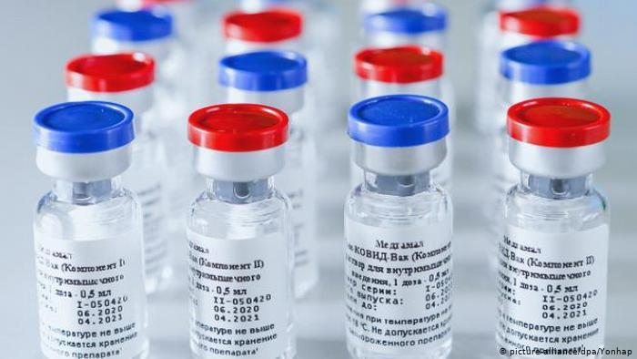
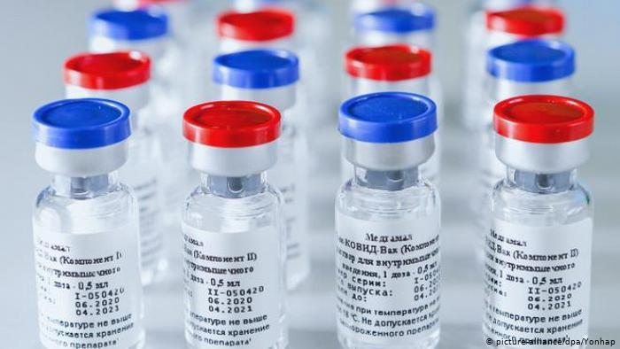

Sputnik
Los resultados científicos fueron claros. Un comentario publicado en The Lancet concluyó: “Otra vacuna puede unirse ahora a la lucha para reducir la incidencia de la covid-19”.
Los resultados científicos fueron claros. Un comentario publicado en The Lancet concluyó: “Otra vacuna puede unirse ahora a la lucha para reducir la incidencia de la covid-19”.
La vacuna pentavalente previene contra tosferina, difteria, tétanos, poliomielitis y enfermedades invasivas por Haemophilus influenzae tipo b (Hib). Es una vacuna que contiene 1) toxoide pertúsico, 2) toxoide tetánico, 3) toxoide diftérico (DPaT) adsorbidos y combinados con 4) vacuna antipoliomielítica inactivada (VIP) con virus de la polio tipos 1, 2 y 3 y 5) vacuna conjugada de Haemophilus influenzae tipo b (conjugado a proteína tetánica). El componente pertúsico de esta vacuna no contiene células. La protección contra difteria y tétanos puede durar hasta 10 años.
Fiebre amarilla es una enfermedad vírica aguda, hemorrágica, que es endémica en áreas tropicales de África y América Latina. Es difícil diferenciar muchas veces entre casos de fiebre amarilla y otras fiebres hemorrágicas virales como arenavirus, el hantavirus, o el dengue.
La influenza es una enfermedad respiratoria contagiosa provocada por los virus de la influenza que infectan la nariz, la garganta y en algunos casos los pulmones. Este virus puede causar una enfermedad leve o grave y en ocasiones puede llevar a la muerte